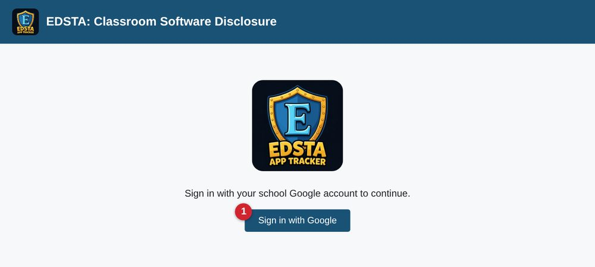
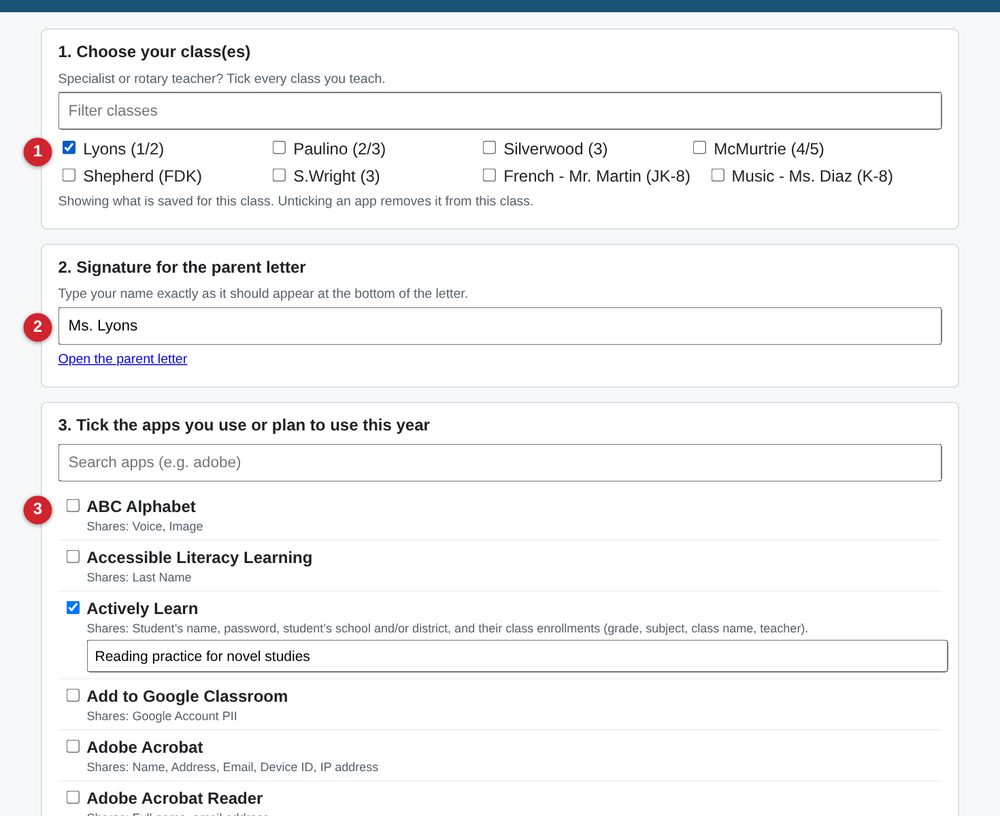
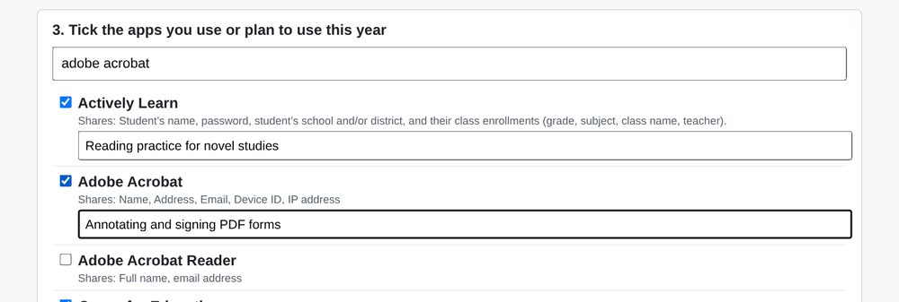
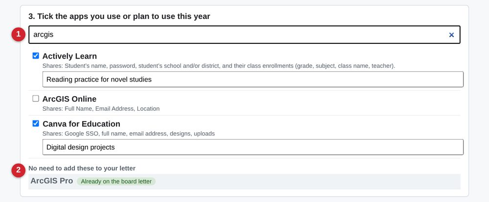
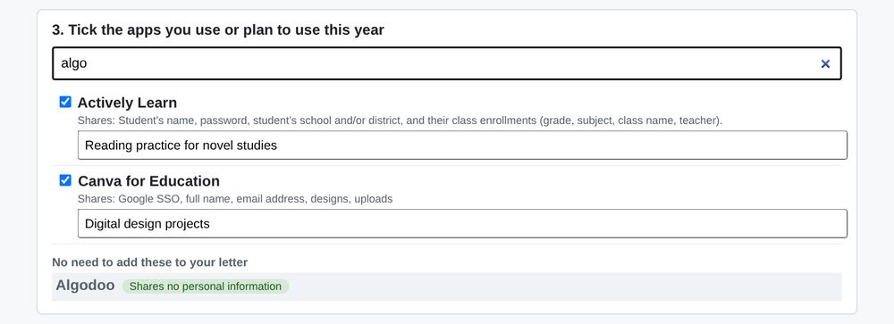
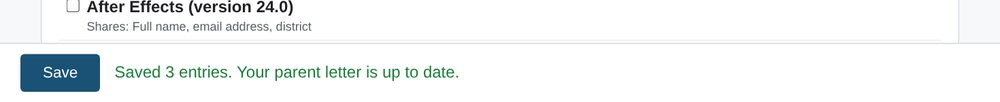
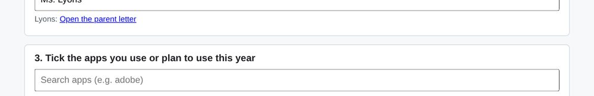
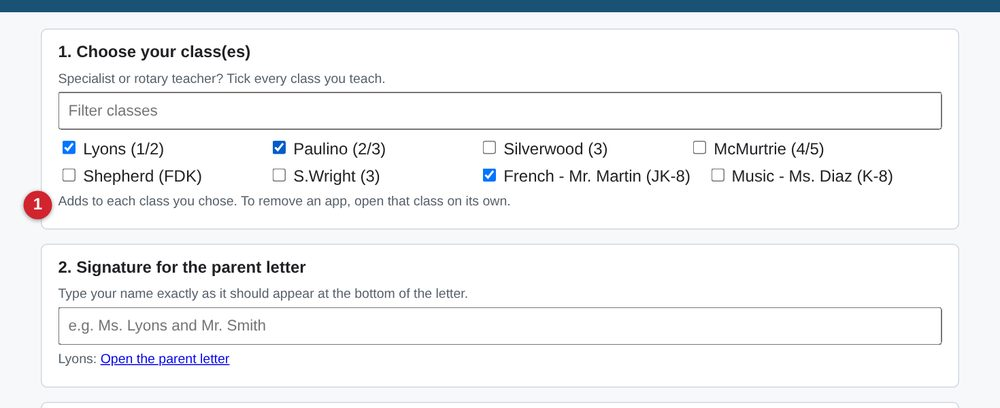
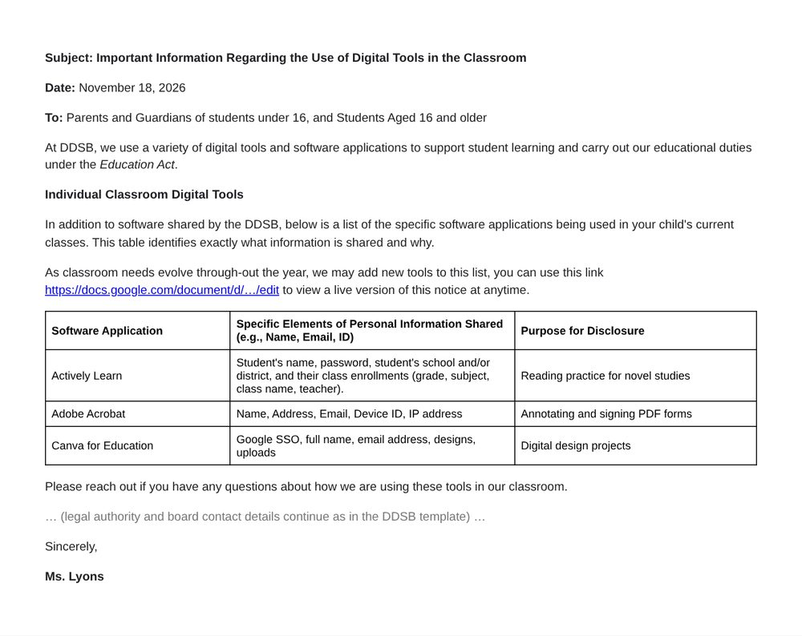

Use the tracker to tell parents which apps your class uses and why. It takes about five minutes, and the parent letter updates itself whenever you change your apps.
Before you start
You need three things:
Your school Google account (the one that ends in @ddsb.ca).
Your class listed in the tracker. If you can't find it in Step 2, ask Adams to add it.
The screenshots in this guide use sample classes and apps. Yours will show your own class names.
Step 1: Sign in
Open the tracker link in Chrome.
Click Sign in with Google and choose your @ddsb.ca account.
If a pop-up window is blocked, allow pop-ups for the site and click the button again.
Only school accounts can sign in. A personal Gmail account is refused.

Step 2: Choose your class
In box 1, tick your class. Split classes appear as you named them, such as "Lyons (1/2)".
Too many classes? Type part of the name into Filter classes.
Choose one class at a time if you want to check or remove apps. Everything already saved for that class loads automatically, with the apps ticked.

In this picture, 1 is where you tick your class, 2 is the signature box (Step 3) and 3 is the app list (Step 4).
Step 3: Type your signature
In box 2, type your name exactly as you want it to appear at the bottom of the parent letter, for example "Ms. Lyons" or "Mrs. Shepherd and Mr. Beaton".
A signature is required before you can save.
It is one line and can be up to 200 characters. Line breaks are turned into spaces.
If your class already has a saved signature, it fills in automatically. Change it any time.
Step 4: Tick your apps and say why
In box 3, type the name of an app you use or plan to use this year into Search apps. Each app shows what personal information it shares, so you can see what parents will be told.
Tick the box next to the app.
A box opens under it. Type why your class uses the app. This is required for every ticked app.
Repeat for each app. Clear the search box to see the full list again.

A good purpose is short and says what the students do with the app:
"Reading practice for novel studies"
"To support the coding expectations in the Math curriculum"
"Digital design projects"
Apps you have already saved stay ticked, even when your search doesn't match them.
Apps you do not need to add
When you search, a grey list headed No need to add these to your letter can appear under the results. These apps have no tick box, because you don't need to disclose them:
Shares no personal information: the app collects nothing about students.
Already on the board letter: DDSB already covers it in its own letter.
If you can't find an app in the tickable list, search for it again. It may be in the grey list.

Here, 1 is the search box. 2 is the grey list. ArcGIS Online needs a tick, but ArcGIS Pro is already on the board letter.

Step 5: Save and open your letter
Click Save at the bottom left. It stays on screen as you scroll.
Wait a few seconds. A green message says "Saved ... entries. Your parent letter is up to date."
Under the signature box, click Open the parent letter to see your class's letter.

Your answers are stored the moment you save. You can close the page afterwards.

Sharing the letter with parents
The link under the signature box is the same link all year. Post it, email it, or add it to your class page or Google Classroom.
The letter is a live Google Doc. When you add or remove an app, it updates itself and the date at the top changes. Parents always see the current list.
The letter is view-only. You change it only through the tracker, never by editing the document.
Parents don't need to sign in to read it. If a parent can't open it, tell Adams.
Changing your apps later in the year
Open the tracker and sign in.
Tick your class by itself. Your saved apps and signature load.
Tick a new app and give its purpose, or untick an app you no longer use.
Click Save. The parent letter updates straight away.
Please add a new app before your students start using it, so the letter stays accurate.
Specialist and rotary teachers
If you teach several classes, you can update them all in one save.
Tick every class you teach in box 1. A note appears: "Adds to each class you chose."
Type your signature in box 2, for example "Mr. Martin, French". It is used on every class you ticked. The box starts empty so a different teacher's name is never copied across by mistake.
Tick your apps and give a purpose for each.
Click Save. Each class gets its own letter, and one link per class appears under the signature box.

The note marked 1 is what you see when more than one class is ticked.
Saving with several classes only adds or updates apps. It never removes any. To remove an app from a class, tick that class by itself, untick the app, and save.
If something goes wrong
What you see
What to do
This account is not allowed. Use your ddsb.ca account.
Sign out and sign in with your @ddsb.ca school account.
Your account is not on the staff list
Ask Adams to add your school email address.
Sign-in expired. Please sign in again.
Reload the page and sign in again.
Failed to fetch
Check your internet connection and reload. If it keeps happening, tell Adams.
Type your name for the letter signature.
Fill in box 2.
Add a purpose for: (app names)
Type a reason under each app listed.
Choose at least one class.
Tick a class in box 1.
Tick at least one app.
When you save several classes at once, tick at least one app.
The letter could not be updated for: (class)
Your apps are saved. Click Save again. If the message comes back, send Adams the full message.
"not shared" next to the letter link
Parents can't open the letter yet. Tell Adams.
Your class isn't in the list
Ask Adams to add it.
What the finished letter looks like
This is a sample of the letter parents see. It follows the DDSB template and fills in the date, the live link, your apps and your signature.

The screenshots and the sample letter use made-up classes, teacher names and a sample link.